Milkymist Labs
Milkymist LabsThe Milkymist One is an experimental hardware appliance for live video effects.
The small 172x145x45mm device creates visualizations similar to those generated by the MilkDrop software, and enables you to mix them with live footage from a camera and interact using MIDI and DMX controllers.
The Milkymist One is programmable and customizable at many different levels.
The simplest way one can use a Milkymist One is by affecting MIDI controls to the existing snippets of code (called "patches") that create the effects. The Milkymist One ships with dozens of pre-existing patches.
Creating new patches can be done with a simple programming language based on the MilkDrop preset format. The Milkymist One device comes with a built-in editor.
Under the hood, the Milkymist One is like a mini-computer running our Flickernoise video synthesis software. It is open source and you are encouraged to improve it and submit your modifications.
But we are not stopping at open source software. As a matter of fact, when this project started in August 2007, one of the goals was to open up chip design. Inside the device, which was launched in September 2011, the Flickernoise software is actually running on an open source CPU part of our own system-on-chip. You are welcome to play with it.
- Multi-standard video input (PAL/SECAM/NTSC)
- Two DMX512 (RS485) ports
- MIDI IN and MIDI OUT ports
- VGA output, 24bpp
- AC97 audio
- XC6SLX45 Spartan-6 FPGA supporting the open source Milkymist SoC
- 128MB 32-bit DDR333 SDRAM
- 32MB parallel flash
- 10/100 Ethernet
- Memory card
- Two 12Mbps USB host connectors
- RC-5 compatible infrared receiver
- RS232 debug port
- Create Digital Motion (10/02/2012): Milkymist is Digital Visual Synthesizer and Processor, Built as Sophisticated Open Source Hardware
- MikroBitti (03/2012): Milkymist One -visualisaattori: Avointa vj-rautaa [FI]
- Make Magazine (30/09/2011): Milkymist One, an Open Source VJ Console, Goes on Sale
- The Register (28/09/2011): Open-source hardware group puts out vid system-on-a-chip
- Theory&Practice (22/09/2011): Видеосинтезатор с открытым кодом Milkymist One [RU]
- ETN (17/05/2011): Videoeffekter i öppen hårdvara söker partners [SE]
- Linux-Magazin (28/01/2011): VJ-System Milkymist als Entwicklerboard erhältlich [DE]
- Create Digital Motion (16/08/2010): Milkymist One, All-in-One Open Source VJ Workstation
- Linux-Magazin (29/12/2009): 26c3: Bewegtbildgenerator Milkymist bald mit Ethernet und USB [DE]
- ask about buying a second-hand unit on the mailing list.
- take the open source design files and manufacture it yourself.
- contact Sebastien about manufacturing a batch. Note that there is a one-time cost of roughly 3000€ to set up the production.


{kind=link}

{kind=link}

 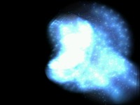
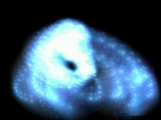
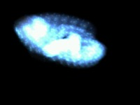
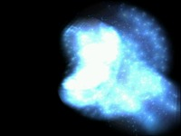
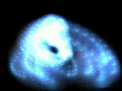
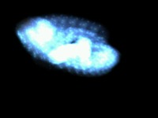
{kind=link}
{kind=link}
{kind=link}
 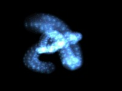
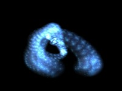
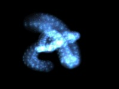
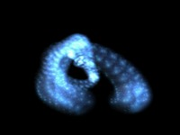
{kind=link}
{kind=link}


 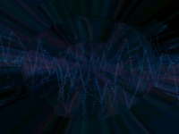
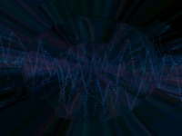
{kind=link}
{kind=link}


 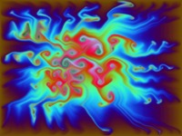
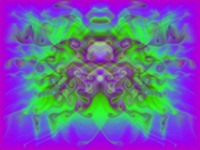
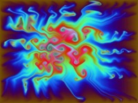
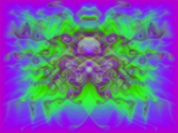
{kind=link}
{kind=link}
 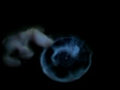
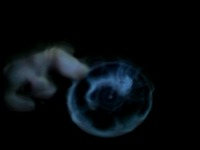
{kind=link}
 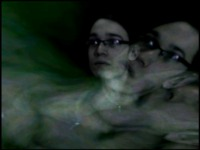
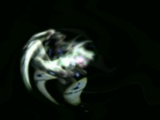
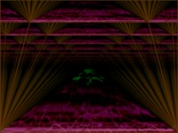
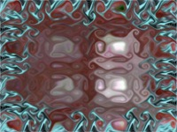
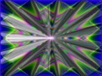
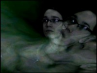
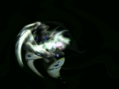
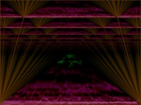
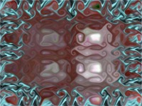
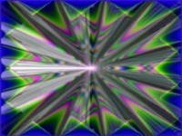
{kind=link}
{kind=link}
{kind=link}
{kind=link}
{kind=link}
{kind=link}

 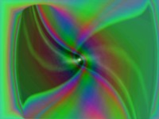
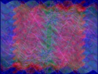
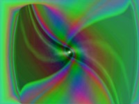
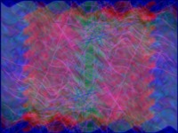
{kind=link}
{kind=link}


 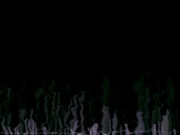
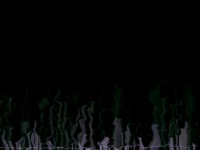
{kind=link}

 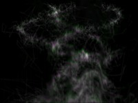
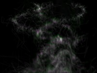
{kind=link}

 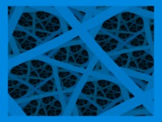
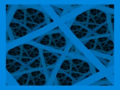
{kind=link}
 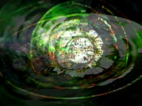
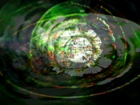
{kind=link}

{kind=link}